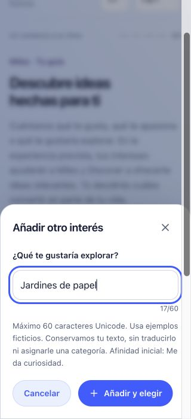

PENDING OWNER VISUAL AND FUNCTIONAL REVIEW. Candidata aislada: 35 intereses, ocho temas, búsqueda y selección opcional, con intereses propios. Publicar no implica aceptación. Solo ejemplos ficticios.
Los doce intereses originales conservan sus IDs y significado. Los temas organizan la exploración; no crean Domains. Nada viene preseleccionado ni hay mínimo. Todos los elegidos parten de Curious, regla explícita de esta candidata. Los intereses propios conservan su texto e identidad temporal, sin traducción ni clasificación.
La explicación de valor se refiere a personalización futura. El Discover actual contiene ideas ficticias y no se personaliza con estas selecciones. Sin IA, recomendaciones reales, cuentas, proyectos ni hitos nuevos.
El borrador es temporal y pertenece a esta pestaña. Se conservan los borradores V2.5C.1 mediante compatibilidad explícita. Recargar mantiene las entradas si sessionStorage está disponible. Deselegir conserva un interés propio; eliminarlo permite volver a añadirlo con nueva identidad. Perfil, Universo y registros guardados permanecen separados. Una sesión nueva muestra el Universo vacío hasta que elijas intereses.
Capturas actuales de viewport, con ocho selecciones de ejemplo (seis de catálogo y dos propias). Usa el candidato navegable y scroll para revisar todo. Las referencias privadas no se publican.



Las colecciones expandidas grandes usan scroll vertical en un único Universo. Pendiente: revisión visual y funcional del propietario. V2.5C.2 no se inicia. Sin autenticación, Sync ni cambios nativos.